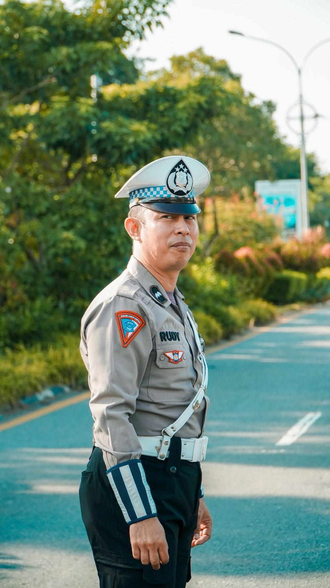
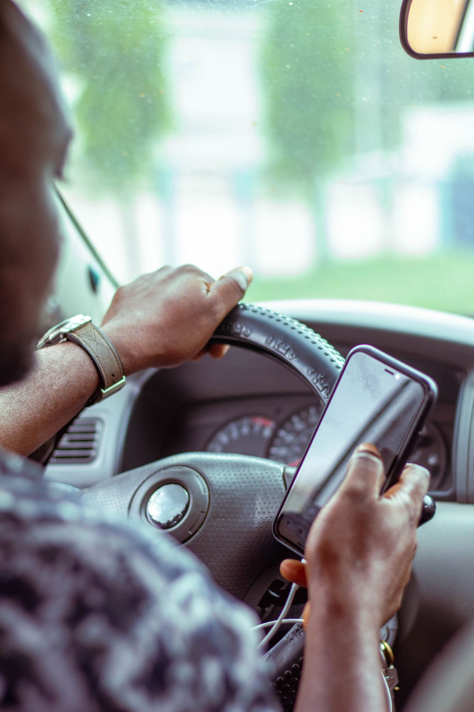
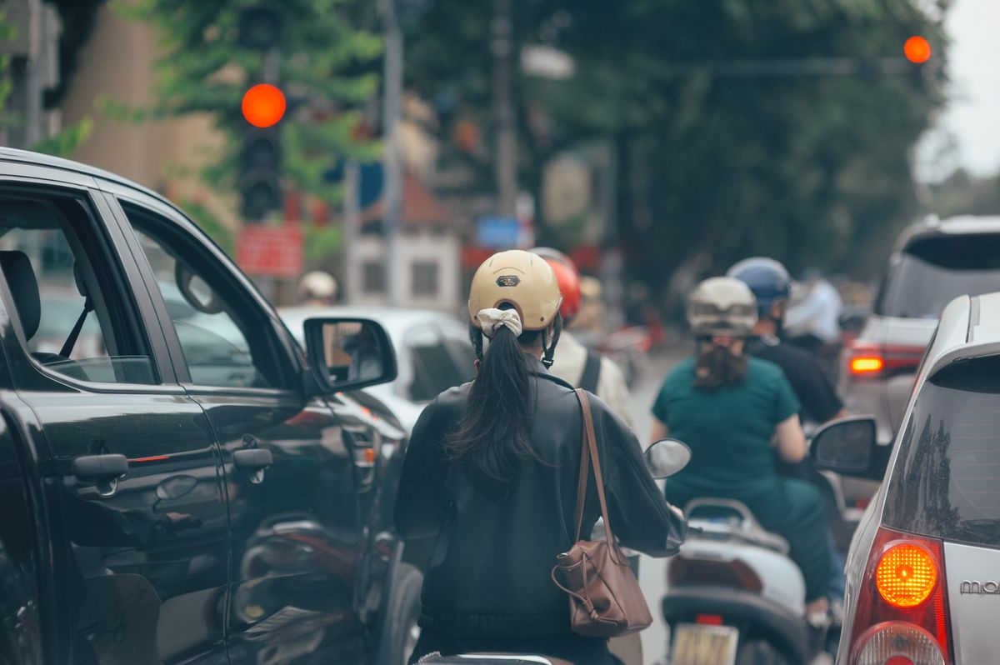

Mulai hari ini, Senin 26 Oktober 2026, polisi menggelar Operasi Patuh 2026 di seluruh Indonesia. Operasinya berlangsung 14 hari, sampai Minggu 8 November 2026. Kalau kamu naik motor atau bawa mobil setiap hari, dua minggu ke depan adalah waktu yang tepat untuk memeriksa lagi kebiasaanmu di jalan.
Operasi ini bukan razia dadakan. Korlantas Polri sudah mengumumkannya sejak akhir pekan lalu, lengkap dengan daftar pelanggaran yang jadi sasaran dan ancaman dendanya. Artikel ini merangkum semuanya per 26 Oktober 2026: sampai kapan, apa saja yang diincar, dan berapa denda maksimalnya, supaya kamu tidak kaget di jalan.
Operasi Patuh 2026 sampai kapan dan apa tujuannya
Operasi Patuh 2026 digelar serentak oleh Korlantas Polri bersama jajaran Polda dan Polres di seluruh Indonesia, mulai Senin 26 Oktober sampai Minggu 8 November 2026. Temanya adalah Polisi Bersama Masyarakat Mewujudkan Lalu Lintas yang Tertib, Aman dan Berkeselamatan.
Kepala Korlantas Polri, Brigjen Pol Aries Syahbudin, menegaskan operasi ini tidak semata-mata mengejar jumlah tilang. Dalam keterangan resmi menjelang operasi, ia berkata keberhasilan operasi tidak diukur dari besarnya jumlah penindakan, tetapi dari perubahan perilaku masyarakat yang semakin tertib dan patuh terhadap aturan lalu lintas. Pendekatannya dibuat edukatif, persuasif, dan humanis, bukan sekadar menindak.
Penindakan dilakukan lewat dua jalur. Sebagian pelanggaran dipantau kamera ETLE, dan di beberapa daerah penindakan manual juga diberlakukan. Polda Jawa Timur, misalnya, kembali memberlakukan tilang manual pada pekan kedua operasi lewat Operasi Patuh Semeru 2026, dan menyiapkan pengawasan internal lewat Propam dan Irwasda supaya petugas di lapangan tetap bekerja sesuai aturan. Polda Metro Jaya mewajibkan dokumentasi video untuk setiap penindakan.

11 pelanggaran yang jadi sasaran dan denda maksimalnya
Secara nasional, ada 11 jenis pelanggaran yang jadi sasaran Operasi Patuh 2026. Denda di bawah ini adalah ancaman maksimal berdasarkan Undang-Undang Nomor 22 Tahun 2009 tentang Lalu Lintas dan Angkutan Jalan, bukan tarif yang pasti dibayar. Besaran akhirnya tetap mengikuti proses tilang yang berlaku.
- Tidak memakai helm berstandar SNI: denda maksimal Rp250.000 (Pasal 291 ayat 1).
- Tidak memakai sabuk pengaman: denda maksimal Rp250.000 (Pasal 289).
- Menggunakan HP saat berkendara: denda maksimal Rp750.000 (Pasal 283). Ini denda paling besar di antara 11 pelanggaran.
- Melanggar marka dan rambu lalu lintas: denda maksimal Rp500.000 (Pasal 287).
- Menerobos lampu merah: denda maksimal Rp500.000 (Pasal 287).
- Melawan arus: denda maksimal Rp500.000 atau Rp250.000, tergantung bentuk pelanggarannya (Pasal 287 ayat 1 atau ayat 4).
- Melebihi batas kecepatan: denda maksimal Rp500.000 (Pasal 287 ayat 5).
- Sepeda motor berboncengan lebih dari satu orang: denda maksimal Rp250.000 (Pasal 292).
- Menerobos jalur busway: denda maksimal Rp500.000 (Pasal 287).
- Parkir di trotoar: denda maksimal Rp250.000 (Pasal 275 ayat 1).
- Pelat nomor (TNKB) tidak sesuai ketentuan: denda maksimal Rp500.000 (Pasal 280).
Perlu dicatat, daftar di atas adalah sasaran tingkat nasional. Tiap Polda bisa menyesuaikan prioritasnya dengan kondisi daerah masing-masing. Di Jawa Timur, misalnya, Operasi Patuh Semeru 2026 menetapkan sembilan sasaran, termasuk mengemudi tanpa SIM dan mengemudi di bawah pengaruh alkohol atau narkoba, yang dendanya mengacu pada pasal yang sama dalam Undang-Undang Nomor 22 Tahun 2009.

Dua pelanggaran yang paling diincar: main HP dan lawan arus
Dari 11 daftar itu, dua pelanggaran disebut berulang kali sebagai perhatian utama: main HP saat berkendara dan melawan arus. Main HP membawa denda maksimal paling besar, Rp750.000, karena langsung mengganggu konsentrasi pengemudi. Lawan arus disebut Korlantas sebagai salah satu perhatian utama operasi kali ini, karena risikonya tabrakan dengan kendaraan dari arah berlawanan.
Keduanya juga paling gampang terekam kamera ETLE. Pelanggaran yang terpantau kamera diproses lewat tilang elektronik, jadi tidak harus ada petugas yang menghentikanmu di jalan. Itu sebabnya kebiasaan kecil seperti mengecek HP di tengah jalan atau memotong arus sebentar tetap berisiko kena tilang selama operasi berlangsung.

Cek sebelum berangkat, biar tidak kena tilang
Cara paling gampang menghadapi operasi ini bukan menghafal denda, tapi memeriksa kelengkapan sebelum jalan. Lima menit di rumah bisa menyelamatkanmu dari tilang dan, yang lebih penting, dari kecelakaan.
- Bawa SIM dan STNK, dan pastikan keduanya masih berlaku.
- Pakai helm berstandar SNI dan kencangkan tali pengikatnya. Penumpang juga wajib pakai helm.
- Pakai sabuk pengaman kalau naik mobil, termasuk penumpang di kursi depan.
- Simpan HP sebelum jalan. Kalau perlu navigasi, atur tujuan dulu sebelum berangkat dan biarkan HP menempel di holder, jangan dipegang tangan.
- Periksa pelat nomor: terpasang rapi, tidak tertutup, dan sesuai dengan STNK.
- Jangan bonceng lebih dari satu orang di motor, jangan masuk jalur busway, dan parkir di tempat yang memang untuk parkir, bukan di trotoar.
Kalau ada yang belum beres, perbaiki dulu sebelum berangkat. Operasi ini berlangsung dua minggu, tapi kebiasaan tertib yang kamu bangun sekarang bisa bertahan jauh lebih lama dari itu.
Intinya
Operasi Patuh 2026 berlangsung 26 Oktober sampai 8 November 2026 di seluruh Indonesia. Ada 11 pelanggaran yang diincar, dengan denda maksimal Rp250.000 sampai Rp750.000. Yang paling diincar adalah main HP saat berkendara dan melawan arus, dan sebagian pelanggaran dipantau kamera ETLE. Per Oktober 2026, daftar dan denda di atas mengacu pada pengumuman Korlantas Polri dan Undang-Undang Nomor 22 Tahun 2009. Cek SIM, STNK, helm, dan HP kamu sebelum jalan, dan dua minggu ini akan lewat tanpa tilang.
← Kembali ke Other